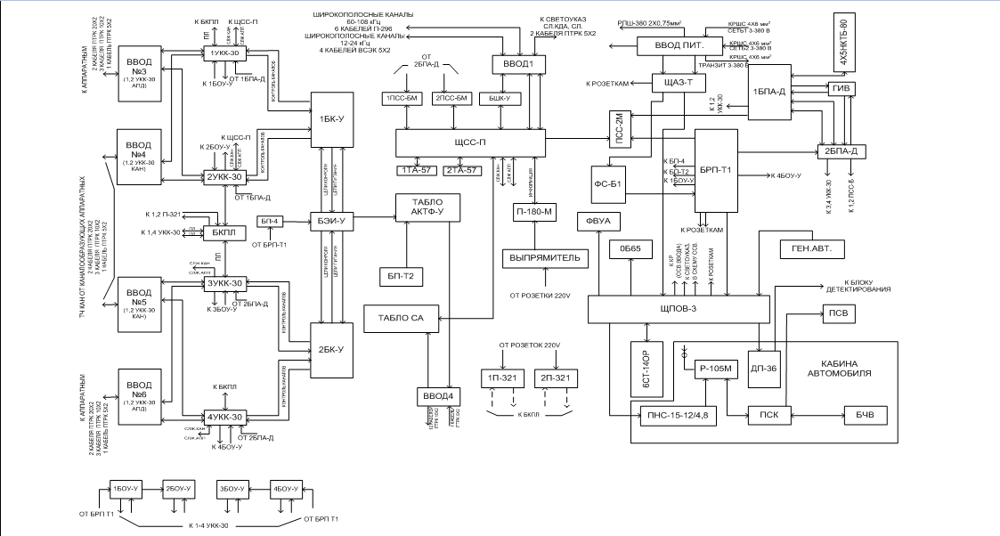

Тема №2. Телефонные аппараты и коммутаторы.
Занятие № 3. Кроссовые аппаратные полевых узлов связи.
Учебные вопросы:
Литература:
1. Назначение, состав, тактико-технические характеристики, структурная схема аппаратной П-246М.
Назначение П-246М.
Аппаратная П-246М предназначена для руководства центром телефонной связи, а также для ввода, создания транзитов и распределения каналов ТЧ.
Технические данные. Аппаратная обеспечивает:
- ввод и бесшнуровую коммутацию цепей ста двадцати четырёхпроводных каналов ТЧ на соединительные линии к аппаратным узла связи, а также создание шестнадцати транзитов с помощью четырех устройств УКК-30;
- ввод и коммутацию шести четырёхпроводных широкополосных каналов со спектром частот 60-180кГц и восьми четырёхпроводных широкополосных каналов со спектром частот 12-24 кГц с помощью блока БШК-У;
- коммутацию восьмидесяти передаточных линий от четырех устройств УКК-30, а также создание двадцати транзитов каналов ТЧ с помощью блока БКПЛ;
- организацию пятнадцати транзитных соединений с помощью трех кабелей с удлинителями 17,3 дБ (2Нп), включаемых вместо аппаратуры АКТФ-У в разрез каналов на устройствах 1-4УКК -30;
- осуществление автоматического контроля состояния девяноста восьми четырёхпроводных (двухпроводных) телефонных каналов ТЧ (канал занят или исправен, обрыв канала, остаточное затухание не в норме, не проходит вызов) с помощью аппаратуры АКТФ-У;
- подключение к любым двадцати четырехпроводным или двухроводным каналом ТЧ ответных устройств (блоков БОУ-У);
- световую сигнализацию состояния девяноста восьми каналов ТЧ с помощью табло АКТФ-У;
- световую сигнализацию состояния девяноста комплектов телефонной аппаратуры с помощью табло СА;
- передачу на командно-диспетчерскую аппаратную (КДА) цепей сигнализации состояния девяноста восьми телефонных каналов (с аппаратуры АЦТФ-У) и девяноста комплектов телефонной аппаратуры по принципу: при исправной работе проходит "земля" через резистор сопротивления 15кОм, при аварии проходит "чистая земля"; а также передачу одиннадцати цепей служебной связи;
- служебную телефонную или громкоговорящую связь с трёх рабочих мест с аппаратными узла связи по свободным парам (кратным пяти) соединительных кабелей с помощью пульта ПСС-2М и двух пультов ПСС-БМ через щиток ЩСС-П;
- ведение служебных переговоров по каналам и соединительным линиям с помощью переговорно-вызывных устройств УКК-30;
- служебную телефонную связь с аппаратными узла связи и с абонентами центра управления через телефонные станции АТС и ЦБ с помощью двух аппаратов П-170-ЭАТС;
- служебную телефонную громкоговорящую связь между операторами, находящимися в кузове и кабине автомобиля, с помощью устройства УПА-2;
- радиосвязь с громкоговорящим приемом с другими аппаратными узла связи и осуществление избирательного вызова корреспондентов с помощью радиостанции Р-105М и устройства УПА-2, как на стоянке, так и во время движения аппаратной;
- подключение одной двухпроводной линии АТС и одной двухпроводной линии ЦБМБ;
- запись на диктофон П-180М телефонных разговоров и докладов, а также устной информации;
- измерение и испытание телефонных каналов и цепей с помощью прибора П-321;
Состав аппаратной. В комплект аппаратной входят:
Основное оборудование:
- Кузов К1.375, оборудованный отопительно-вентиляционной установкой ОВ65, фильтровентиляционной установкой ФВУ А-100Н-12, аккумуляторной батареей 6СТ-140Р, установленный на шасси Урал-375А.
- устройство УКК-30 - 4 компл.
- блок БКПЛ-1 компл.
- блок БШК-У-1 компл
- аппаратура АЦТФ-У- 1 компл.
В составе аппаратуры:
- блок БК-У -2 шт.
- блок БЭИ-У-1шт.
- блок БОУ-У- 4 компл.
- табло АКТФ-У -1 компл.
- табло СА-1 компл.
- пульт ПСС-2М-1 компл.
- пульт ПСС-БМ- 2 компл.
Вспомогательное оборудование:
- щиток ЩСС-П- 1 компл.
- радиостанция Р-105М -1компл.
- устройство УПА-2-1 компл.
В состав устройства:
- пульт ПСВ-1 шт.
- пульт ПСК- 1шт.
- блок БЧВ- 1 шт.
- диктофон П-180М-1 компл.
- телефонный аппарат П-170 - 2 шт.
- телефонный аппарат ТА-57 - 2 шт.
- фильтр ФС-Б1- 1 шт.
- щиток ГИВ-П-1 шт.
Измерительное оборудование:
- измерительный прибор П-321 РИ2.700.005- 2 компл.
- комбинированный прибор Ц4313 ТУ- 25-04-347-67-1 компл.
Электропитающее оборудование:
- шит ЩАЗ-Т-1 компл.
- щит ЩПОВ-3-1 комл.
- блок БРП-Т1-2 компл.
- преобразователь ПНС-15-12/4.8-1компл.
- блок БПА-Д-1 компл.
- аккумуляторная батарея 5 НКТБ-80- 4 шт.
- блок БП-4-1 компл.
- электроустановка ЭУ-375-16-Т/400-1компл.
Вводно-соединительное оборудование, находящееся в аппаратной:
- кабель КРШС 4*6 мм2 длиной 50м-2 катушки.
- муфта РМ-20-2 шт.
- кабель КРШС 4*6 мм2 длиной 2м-2 шт.
- муфта РМ-10-1 шт.
- кабель ПТРК 20*2(ТФ) длиной 5м-1 шт.
- муфта ПМ-20-1 шт.
- кабель ПТРК 20*2 длиной 5м-3 шт.
- Вставка ВП-5 -2 шт.
- кабель ПТРК 10*2 длиной 5м-2 шт.
Имущество, перевозимое отдельно:
- кабель ВСЭК 5*2 длиной 90м-4 катушки.
- муфта РМ-20-4 шт.
- кабель ПТРК 20*2 длиной 50м- 20 катушек.
- муфта ПМ-20 - 5 шт.
- кабель ПТРК 10*2 длиной 2*50м-12 катушек.
- муфта РМ-10- 8 шт.
- кабель ПТРК 5*2 длиной 2*50м – 4 катушки.
- вставка ВП-5-16 шт.
- кабель ПТРК 20*2 (ТФ) длиной 5м-4 шт.
- станок намоточный-2 шт.
- кабель ПТРК 20*2 длиной 5м-5 шт.
- кабель П-296 (с полумуфтами П-296 и П-290 на концах)
- длиной 5м-шт.
- кабель с удлинителями 2Нп длиной 2 м-3 шт.
Назначение и краткая характеристика аппаратуры и оборудования.
Устройство УКК-30.
Устройство коммутации каналов (УКК-30) предназначено для подключения и бесшнуровой коммутации стандартных четырехпроводных телефонных станционных линий.
Электрическая схема устройства обеспечивает:
- подключение и бесшнуровую коммутацию тридцати четырехпроходных телефонных каналов ТЧ;
- подключение и бесшнуровую коммутацию тридцати четырёхпроводных станционных линий;
- подключение и бесшнуровую коммутацию двадцати пяти проводных передаточных линий, обеспечивающих совместную работу нескольких устройств УКК-30, и образование кроссов общей ёмкостью (кратной 30) до 120 каналов и 120 станционных линий;
- составление четырёх транзитных соединений стандартных каналов ТЧ с включением удлинителей затуханием 17,ЗдБ (2Нп);
- подключение аппаратуры контроля стандартных четырехпроводных каналов ТЧ типа АКТФ (при необходимости организации транзитов разъёмы ВХОД и ВЫХОД АКТФ замыкаются накоротко кабелями с включёнными в них удлинителями 17,ЗдБ (2Нп);
- безотрывное включение в разрез любого канала или станционной линии устройства ПВУ, входящего в состав устройства УКК-30;
- ведение с собственного устройства ПВУ разговора, приёма и посылки сигнала вызова в сторону канала или линии, как в четырехпроводном, так и в двухпроводном режимах (приём и посылка сигнала тонального вызова производится на частоте 2100Гц);
- использование 5,10,15,20-й пар каждого кабеля ПТРК 20*2;5,10-й кабеля ПТРК 10*2, 5-й пары каждого кабеля ПТРК 5*2, подключаемых к устройствам УКК-30 через кабельные вводы аппаратной, в качестве служебной линий;
- световую индикацию всех соединений;
- световую, звуковую сигнализацию перегорания предохранителей;
- возможность без обрывного подключения в разрез любого канального или линейного выхода измерительного прибора вместо собственного устройства ПВУ устройств УКК-30;
- возможность подключения измерительного прибора вместо любой передаточной линии;
- возможность подключения вместо постоянных удлинителей затуханием 17,ЗдБ (2Нп) внешних переменных усилителей-удлинителей для составления четырёх транзитных соединений нестандартных четырехпроходных каналов.
Электропитание устройства обеспечивается от внешнего источника постоянного тока напряжением 27В +10% -20% и от источника переменного тока напряжением 80В и частотой 50Гц, используемого для индукторного вызова. Потребляемая устройством мощность не превышает: при питании источника постоянного тока напряжением 27В-210Вт, а при включенном табло -70Вт.
Блок БШК-У.
Блок широкополосных каналов (БШК-У) предназначен для подключения и коммутации шести широкополосных каналов со спектром частот 60-180кГц и восьми широкополосных каналов со спектром частот 12-24кГц. Кроме того, блок обеспечивает подключение и возможность коммутации на щиток ЩСС-П четырёх двухпроводных служебных линий.
Блок БКПЛ.
Блок БКПЛ предназначен для подключения и коммутации передаточных линий.
Блок обеспечивает:
- подключение и коммутации восьмидесяти пятипроводных передаточных линий от четырёх устройств УКК-30;
- организацию двадцати транзитных соединений каналов с помощью шнуров с удлинителями 2Нп;
- подключение и коммутацию входов измерительных цепей на два прибора П-321.
Аппаратура АКТФ-У.
Аппаратура контроля телефонных каналов (АКТФ-У) предназначена для контроля девяноста восьми телефонных каналов проводной и радиорелейной связи. Аппаратура АКТФ-У состоит из аппаратуры АЦТФ-У, в которую входят блок БЭИ-У, два блока БК-У, и блоков БОУ-У (подключаемых для образования шлейфа на противоположном конце канала).
Схема аппаратуры обеспечивает:
- подключение и проверку до девяноста восьми четырёх - или двухпроводных телефонных каналов. Номинальные уровни двухпроводных телефонных каналов следующие: на приём - минус 6,948 дБ(0,8Нп); на передачу - 0дБ(0Нп); Примечание: подключение и проверка четырехпроводных каналов аппаратурой АКТФ в режиме трансляции сигналов индукторного вызова не предусмотрены;
- проверку каналов при прохождении по каналам командного сигнала частотой 2300Гц, что обеспечивается при остаточном затухании тракта передачи не более 8,686дБ (1,0Нп) и суммарном относительном остаточном затухании трактов приёма и передачи не более 8,686дБ (1,0Нп);
- циклический и непрерывный контроль каналов. Пауза при работе в циклическом режиме составляет 17 мин;
- проверку девяноста восьми телефонных каналов на занятость и контроль исправности свободных каналов на участке от кросса до кросса при отключении их от коммутатора;
- проверку четырехпроводных телефонных каналов на прохождение сигнала тонального вызова на частоте 2100Гц;
- проверку четырехпроводных каналов по остаточному затуханию и фиксацию неисправности каналов при суммарном относительном затухании тракта приёма и передачи, превышающем установленную норму +(3,474-6,080)дБ [+(0,4-0,7)Нп] -(3,474-6,948)дБ [-(0,4-0,8)Нп], а также установку нормы по остаточному затуханию канала с точностью до +_0,868дБ(0,1Нп);
- проверку резервных четырехпроводных каналов по искусственному созданному шлейфу без блока БОУ-У;
- проверку двухпроводных телефонных каналов на прохождение сигнала индукторного вызова;
- время проверки одного канала 4±0,Зс;
- отображение сигнальными лампами местного табло в течение 4±0,Зс состояния каналов после их проверки;
- кратковременную акустическую сигнализацию зуммером неисправности канала в начале отображения характера неисправности;
- блокировку сигнальных ламп на местном и выносим табло при любой неисправности канала;
- разблокировку сигнальных ламп местного и выносного табло после установления неисправности канала при повторной проверке;
- нормальную работу при условии, если сумма времени удлинения и времени задержки распространения сигнала индукторного вызова в канале в одном направлении (задержка конца ответа) не превышает 600мс.
Питание блока БЭИ-У осуществляется от блока БП-4. Блоки БК-У питаются от блока БП-4 через блок БЭИ-У. Мощность, потребляемая аппаратурой, не превышает 200В*А.
Блок БОУ-У.
Блок ответных устройств (БОУ-У) предназначен для проверки четырехпроводных телефонных каналов на прохождение сигнала тонального вызова, измерения остаточного затухания и для проверки двухпроводных телефонных каналов на прохождение сигнала индукторного вызова.
Блок включается в линию связи аппаратуры уплотнения между кроссом и коммутатором.Блок БОУ-У при совместной работе с блоками БЭИ-У и БК-У (АЦТФ-У) обеспечивает контроль пяти четырёх- или двухпроводных телефонных каналов в следующих режимах:
- в четырёхпроводном - при номинальном уровне приёма и передачи минус 3,47дБ (-0.4Нп);
- в четырёхпроводном - при номинальном уровне приёма плюс 4,34дБ(0,5Нп), а передачи - минус 13,03дБ(-1,5Нп);
- - в двухпроводном - при номинальном уровне приёма минус 6,95дБ (-0,8Нп), а передачи - 0дБ(0Нп).
Чувствительность приёмника ПИВ-20В. Напряжение ответного сигнала индукторного вызова при нагрузке сопротивлением 2кОм равно 40-65В. Питание блока осуществляется от сети переменного тока напряжением 220В +10% -20%, частотой 50Гц.
Подробное описание блока БОУ-У дано в соответствующем альбоме технической документации.
Табло АКТФ-У предназначено для отображения состояния девяноста восьми телефонных каналов, контролируемых аппаратурой АКТФ-У.
Электрическая схема табло АКТФ-У обеспечивает:
- визуальное отображение состояния девяноста восьми телефонных каналов, контролируемых аппаратурой АКТФ-У. Каждому телефонному каналу соответствует две сигнальные лампы - зелёная и красная. Горение зеленой сигнальной лампы сигнализирует или об исправности соответствующего телефонного канала, или о его занятости; горение красной лампы сигнализирует о неисправности данного канала. Если обе лампы не горят, значит данный телефонный канал исключён из проверки;
- нормальную работу при условии, если расстояние между аппаратурой АКТФ-У и табло АКТФ-У не превышает 4км;
- параллельное подключение дублирующего табло;
- автоматическую синхронизацию работы аппаратуры АКТФ-У и табло АКТФ-У через каждый новый оборот ротора шагового искателя;
- сброс искателя табло в нулевое положение при включении питания аппаратуры АКТФ-У и сброс искателей аппаратуры АКТФ-У;
- выдачу на аппаратуру АКТФ-У сигналов об исправном или неисправном состоянии канала, зафиксированном на табло во время предыдущего цикла контроля канала;
- контроль исправности сигнальных ламп табло;
- сброс набранной на табло информации при включении питания.
Табло питается от блока БП-Т2, представляющего собой стабилизированный источник постоянного тока напряжением 27+5/-1В и 12+4/-2В и источник переменного тока напряжением 8 +1,2 /-2В.
Мощность, потребляемая табло от источника питания при заблокированных девяноста восьми сигнальных лампах, не превышает: по постоянному току -120Вт, по переменному току -50В*А.
Табло СА.
Табло СА предназначено для визуального отображения состояния связи ста комплектов телефонной, телеграфной и фототелеграфной аппаратуры. В аппаратной П-246М телефонные и телеграфные комплекты табло СА используются только для отображения состояния телефонной аппаратуры. Фототелеграфные комплекты не используются.
Электрическая схема табло СА в аппаратной П-246М обеспечивает:
- подключение сигнальных цепей и визуальное отображение состояния девяноста комплектов телефонной аппаратуры;
- ретрансляцию сигналов о состоянии связи телефонной аппаратуры на параллельное выносное табло;
- использование шести свободных пар проводов в сигнальных кабелях в качестве линий служебной связи и выдачу их на колодку СЛ 1-8;
- набор схемы связи на передней плате табло с помощью кнопок и шильдиков;
- нормальную работу по кабелю ПТРК при условии, если расстояние между аппаратурой, выдающей сигнализацию, и табло СА не превышает 2км;
- сигнализацию обрыва сигнальной жилы кабеля до оконечной аппаратной.
Питание табло осуществляется от блока питания табло (БП-Т2), выдающего напряжения 48 и 20В постоянного тока и напряжения 8 и 5,5В переменного тока.
Мощность, потребляемая табло при питании от блока БП-Т2, не превышает: по постоянному току - 150 Вт, а по переменному току - 100Вт.
Масса блока - 35 кг.
Пульт ПСС - 2М.
Пульт ПСС - 2М предназначен для обеспечения громкоговорящей или телефонной связи с аппаратами АТГС-П и с аналогичными пультами, связи по служебным каналам радиорелейных станций и телефонной связи с абонентами АТС, МБ, ЦБ, а также для ведения командной циркулярной передачи на аппараты АТГС-П.
Пульт ПСС - 2М обеспечивает:
- подключение:
- десяти двухпроводных линий от групп аппаратов АТГС-П (по три аппарата в каждой группе) к комплектам АЛ 1-10 в режиме приема сигнала вызова постоянным током. Комплекты АЛ 1-6, кроме того, могут быть использованы для обеспечения связи по двухпроводным линиям радиорелейных станций или групп аппаратов чипа АТГС-П в режиме приема вызова голосом;
- семи двухпроводных соединительных линий от пультов служебной связи или от коммутаторов системы МБ к комплектам СЛ 1-7;
- одной двухпроводной соединительной линии от аналогичного пульта, работающего в режиме КДА, к комплекту СЛ КДА;
- одной линии от телефонной станции системы ЦБ к комплекту СЛ ЦБ;
- одной линии автоматической телефонной станции (АТС) к комплекту СЛ АТС;
- прием сигнала вызова с любого абонентского аппарата АТГС-П при посылке по линии сигнала вызова постоянным током напряжением 24В на комплекты АЛ 1-10 (фиксация на вызванную лампу и общевызывной звонок);
- прием сигнала вызова по соединительным линиям на комплекты СЛ 1-7 при посылке сигнала вызова постоянным током напряжением 24В или сигнала индукторного вызова (фиксация на вызванную лампу и общевызывной звонок);
- прием сигнала вызова голосом на комплект СЛ КДА, а также возможность приема циркулярного сигнала вызова с одновременным подключением абонентских линий АЛ 1-10 данного пульта к первой соединительной линии;
- возможность избирательной посылки сигнала вызова голосом на группы абонентских аппаратов, а также возможность ведения циркулярной передачи на все группы аппаратов АТГС-П, обслуживаемых данным пультом;
- возможность раздельного переключения комплектов АЛ 1-6 с режима приема вызова постоянным током на режим приема вызова голосом;
- возможность коммутации линии С Л ЦБ на любую из линий АЛ 1-6 АЛ 1-7 или СЛ 1-7 прослушиванием ведущихся переговоров;
- возможность избирательной посылки сигнала по абонентской линии пульта, работающего в режиме КДА, и приема этого сигнала на комплекты СЛ КДА подчиненных пультов;
- ведение переговоров с абонентами комплектов АЛ 1-6, АЛ 7-10, СЛ 1-7 через два рабочих места пульта - ручной микрофон (ГГС) и микротелефонную трубку;
- подключение входа диктофона П-180-М к любому рабочему месту пульта.
Питание пульта ПСС-2М осуществляется от сети переменного тока напряжением 220В, а в случае отсутствия или пропадания напряжения сети - от любого источника постоянного тока напряжением 24В.
Переключение с питания от сети переменного тока на питание от источника постоянного тока и обратно происходит автоматически. Мощность, потребляемая пультом от источника напряжения 24В, составляет 50Вт.
Пульт ПСС-БМ.
Пульт служебной связи (ПСС-БМ) предназначен для организации громкоговорящей и телефонной служебной связи по двухпроводным линиям с аппаратами АГТС, а также для обеспечения телефонной связи с аналогичными пультами, коммутаторами и оконечными аппаратами системы МБ.
Электрическая схема пульта обеспечивает:
- подключение:
- десяти двухпроводных линий связи с аппаратами АГТС, пультами, коммутаторами и с оконечными аппаратами системы МБ;
- одной двухпроводной соединительной линии от пульта ПСС к комплекту СЛ КДА;
- входа диктофона П-180М к любому из двух рабочих мест пульта;
- источников постоянного тока напряжением 27В +10% -18% и переменного тока напряжением 80В, частотой 15-50Гц;
- ведение переговоров по линиям служебной связи с помощью: микротелефонной трубки, микрофона и громкоговорителя;
- возможность подключения к пульту гарнитуры (шлемофона со встроенной телефонной гарнитурой и ларингофонным усилителем);
- возможность подключения любого количества (из девяти) комплектов пульта из режима МБ в режим ГС;
- коммутацию линий служебной связи между собой и возможность прослушивания и записи на диктофон ведущихся переговоров;
- избирательный вызов голосов абонентов в режиме ГС, а также возможность циркулярной передачи команд всем абонентам;
- возможность ведения групповой циркулярной передачи команд всем абонентам с пульта в режиме КДА ив режиме ПП (циркуляр КДА и циркуляр ПП);
- посылку сигнала вызова переменным током напряжением 80В по линиям в режиме МБ;
- посылку сигнала вызова постоянным током напряжением 27В +10% -18% по линиям ЛИН.1-5 в режиме ГТС и по линиям СЛ КДА;
- приём сигнала вызова постоянным током напряжением 27В +10% -18% по линиям в режиме ГТС и сигнализацию поступления вызова сигнальной лампой и зуммером;
- приём сигнала вызова переменным током напряжением 80В по линиям в режиме МБ и сигнализацию поступления вызова сигнальной лампой и зуммером;
- приём сигнала вызова голосом с линии СЛ КДА;
- возможность заземления плюса или минуса источника постоянного тока.
Питание пульта осуществляется от источника постоянного тока напряжением 27В +10% -18%. Ток, потребляемый пультом, не превышает 1,5А.
Для посылки сигнала вызова по линиям в режиме МБ к пульту подключается источник переменного тока напряжением 80В, частотой 15-50Гц. Ток, потребляемый пультом от источника переменного тока, не превышает 0,1А.
Щиток ЩСС-П.
Щиток служебной связи (ЩСС-П) предназначен для подключения и коммутации цепей служебной связи.
Электрическая схема щитка обеспечивает подключение:
- пятнадцати служебных линий канальной стороны от каждого из четырёх устройств УКК-30 через розетки 1-4 УКК СЛЖ КАН.;
- пятнадцати служебных линий аппаратной стороны от каждого из четырёх устройств УКК-30 через розетки 1-4 УКК СЛЖ АПП.;
- шести соединительных линий от табло СА через розетку СЛ 1-8 (СА);
- пяти служебных линий от блока БШК-У через розетку СЛЖ БШК;
- пяти соединительных линий от других аппаратных через розетку СЛ 1-5;
- пяти соединительных линий от аппаратной КДА через розетку СЛ 1-5 КДА;
- десяти служебных линий от двух пультов ПСС-Б через розетки 1,2 ПСС-6М ЛИН. 1-10;
- десяти абонентских линий от пульта ПСС-2М через розетку ПСС-2М АЛ 1-10;
- восьми соединительных линий, одной линии ЦБ/МБ и одной линии АТС от пульта ПСС-2М через розетку ПСС-2М СЛ;
- линии ЦБ/МБ, АТС через платы с клеммами ЦБ/МБ, АТС;
- двух телефонных аппаратов через платы с клеммами 1,2 ТА;
- диктофона П-180М через плату с клеммами ПСС-2М П-180.
ЩИТ ЩАЗ-Т.
Щит автоматической защиты трёхфазный (ЩАЗ-Т) предназначен для обеспечения непрерывного питания аппаратуры связи от двух трёхфазных или однофазных источников переменного тока с фазным напряжением 220В, частотой 50Гц, током до 25А; для защиты обслуживающего персонала в случае появления опасного напряжения (выше 24В ) между корпусом оборудования, установленного в кузове аппаратной, и специальным заземлителем, а также для автоматического отключения аппаратуры при пропадании напряжения на входах щита. Щит обеспечивает:
- подключение двух трёхфазных или однофазных источников переменного тока (СЕТЬ 1 и СЕТЬ 2) и одновременное раздельное электропитание аппаратуры связи (разъёмы ВЫХ.1 и ВЫХ.2) от источника СЕТЬ 1 при напряжении 220В +10% -15% и средств жизнеобеспечения (разъём ВЫХ.3) от источника СЕТЬ 2 при напряжении 220В +10% -20%;
- автоматическое отключение потребителей от источников переменного тока со световой и звуковой сигнализацией при появлении опасного напряжения клеммой "земля" и розеткой ЗАЗЕМЛЕНИЕ БЕЗОПАСНОСТИ (между корпусом аппаратной и "землёй");
- раздельное ручное включение электропитания от указанных источников;
- токовую защиту при перегрузке или коротком замыкании в цепях потребителей;
- автоматическое переключение аппаратуры связи с питания от источника СЕТЬ 1 на питание от источника СЕТЬ 2 при пропадании или снижении фазного напряжения источника СЕТЬ 1 до величины 176-185В, с автоматическим отключением оборудования и с сохранением возможности их ручного включения;
- автоматическое переключение потребителей на электропитание от источника СЕТЬ 1 при восстановлении напряжения на нём в пределах от 190 до 210В;
- ручное переключение потребителей на электропитание от источника СЕТЬ 1 с помощью кнопки (если напряжение источника СЕТЬ 1 составляет 190-242В).
Вводное оборудование аппаратной.
К вводному оборудованию аппаратной относятся семь вводов.
К вводу 1 подключается:
- к колодкам БШК КАН. 12-24 кГц-кабели ВСЭК 5*2, предназначенные для приёма и передачи восьми широкополосных каналов со спектром частот 12-24 кГц;
- к колодкам БШК КАН. 60-108 кГц-кабели П-296, предназначенные для приёма и передачи шести широкополосных каналов со спектром частот 60-108 кГц;
- к колодкам СЛ 1-5 КДА - кабель ПТРК 5*2, предназначенный для подключения пяти соединительных линий от аппаратной КДА;
- к колодке СЛ 1-5 КДА - кабель ПТРК 5*2, предназначенный для подключения любых пяти служебных линий, по которым организуется служебная связь;
- к платам с клеммами ТА 1,2 - линии от аппаратных, предназначенные для обеспечения связи с помощью телефонных аппаратов П-170-ЭАТС;
- к плате с клеммами ЦБ(МБ) - соединительная линия от станции внутренней связи ЦБ или МБ;
- к плате с клеммами АТС - соединительная линия от станции внутренней связи системы АТС;
К вводам 2,5 подключается:
- к колодкам КАН.1-4 УКК 1-8, 9-16, 17-24 - кабели ПТРК 20*2, предназначенные для приёма от каналообразующих аппаратных девяноста шести четырёхпроводных телефонных каналов;
- к колодкам КАН.1-4 УКК 25-28 - кабели ПТРК 10*2, предназначенные для приёма от каналообразующих аппаратных шестнадцати четырёхпроводных телефонных каналов ТЧ;
- к колодкам КАН.1-4 УКК 29-30- кабели ПТРК 5*2, предназначенные для приёма от каналообразующих аппаратных восьми четырёхпроводных телефонных каналов ТЧ.
К вводам 3,6 подключаются:
- к колодкам АПП.1-4 УКК 1-8, 9-16, - кабели ПТРК 20*2, предназначенные для передачи шестидесяти четырёх четырёхпроводных каналов ТЧ на оконечные аппаратные;
- к колодкам АПП.1-4 УКК 17-20, 21-24, 25-28 - кабели ПТРК 10*2, предназначенные для передачи сорока восьми четырёхпроводных каналов ТЧ на оконечные аппаратные;
- к колодкам АПП.1-4 УКК 29-30 - кабели ПТРК 5*2, предназначенные для передачи восьми четырёхпроводных каналов ТЧ на оконечные аппаратные. К вводу 4 (СИГН.ТФ) подключаются:
- к колодкам СИГН.ТФ.ВХ. - кабели ПТРК 10*2 от станций дальней связи; к колодкам СИГН.ТФ.ВЫХ. - кабели ПТРК 10*2 от аппаратной КДА; к колодкам СИГН.АКТФ.ВЫХ. - кабель ПТРК 5*2 от аппаратной КДА. К вводу ПИТ.подключаются:
- к колодкам СЕТЬ 3 380В 1 и 2 - кабели КРШС 4*6 мм от двух источников трёхфазного или однофазного тока с фазным напряжением 220 В +10% -15%;
- к колодке СВЕТОУКАЗ. - провод от светоуказателя аппаратной;
- к плате с клеммами 12В - провода от внешнего потребителя переменного тока напряжением 12В, мощностью не более 15 Вт;
- к клемме "земля" - провода от заземлителя основного заземления аппаратной и от клеммы "земля" одной из соседних аппаратных узла связи;
- к колодке ЗАЗЕМЛЕНИЕ БЕЗОПАСНОСТИ - провод от заземлителя заземления безопасности щита ЩАЗ-Т.
К колодке ОСВ.ВВОДА каждого ввода подключается лампа освещения ввода.
2. Структурная схема аппаратной П-246М.
На структурной схеме аппаратной показаны функциональное взаимодействие аппаратуры и оборудования между собой, а также прохождение каналов и токов электропитания аппаратуры и блоков.
Устройства, блоки и щитки на схеме обозначены четырехугольниками, а соединения между ними показаны линиями со стрелками. Временные соединения показаны пунктирными линиями.
Кабели, подключаемые к вводам аппаратной, обозначены также линиями со стрелками.
Сто двадцать четырехпроводных телефонных каналов от каналообразующих аппаратных и сто двадцать четырехпроводных соединительных линий от оконечных аппаратных, подводимые кабелями ПТРК 20x2, ПТРК 10x2 и ПТРК 5x2 к вводам 2,3,5 и 6 аппаратной П-246М, подключаются к устройствам 1-4 УКК-30, где осуществляется их коммутация.
Схемой устройств 1-4 УКК-30 предусмотрена возможность включения аппаратуры АЦТФ-У (блоков БК-У и БЭИ-У) - для обеспечения автоматического контроля и оценки качества основных параметров не более девяноста восьми телефонных каналов со стороны аппаратной П-246М, а также возможность подключения блоков БОУ-У к двадцати каналам, контролируемым аппаратурой АЦТФ-У с противоположной стороны канала.
Сигнализация аварийного состояния контролируемых каналов подается с блока БЭИ-У на табло АКТФ-У, затем через ввод 4 передается кабелем ПТРК 5х2 на аппаратную КДА.
Для измерения остаточного затухания телефонных каналов используются приборы 1,2 П-321, которые подключаются через блок БКПЛ и разъем ИП любого устройства УКК-30 к измеряемым каналам.
Шесть широкополосных каналов со спектром частот от 60 до 108 кГц, подводимые шестью кабелями П-296, и восемь широкополосных каналов со спектром частот от 12 до 24 кГц, подводимые четырьмя кабелями ВСЭК 5x2 к вводу I аппаратной от каналообразующих аппаратных, выдаются на блок БШК-У, на гнездном поле которого осуществляется их соединение с помощью шнуров.
К вводу I кабелями ПТРК 5x2 подключаются линии внутренней служебной связи от аппаратных узла связи. Линии служебной связи с канальной и аппаратной сторон телефонных каналов поступают на аппаратную по свободным парам (кратным 5) кабелей ПТРК 20x2, ПТРК 5x2.
Служебные линии широкополосных каналов поступают в аппаратную по пятым парам кабелей ВСЭК 5x2, От устройств 1,2,3, 4 УКК-30, блока БШК-У табло СА и от ввода I служебные линии подаются к щитку ЩСС-П. После коммутации на щитке ЩСС-П они поступают на пульты ПСС-2М, 1,2 ПСС-Б.
Служебная громкоговорящая связь между кабиной и кузовом аппаратной осуществляется через устройство УПА-2, состоящее из пульта ПСК и блока БЧВ, установленных в кабине автомобиля и пульта ПСВ, установленного в кузове аппаратной.
К пульту ПСК подключена радиостанция P-I05M, через которую осуществляется радиосвязь с другими аппаратными во время движения и на стоянке, как из кузова, так и из кабины автомобиля.
Две сети переменного трехфазного тока напряжением 380 В подключаются к аппаратной П-246М кабелями КРШС 4x6 мм2 через колодки СЕТЬ3 ~ 380 V 1,2 ввода ПИТ., откуда напряжение сети проходит на щит ЩАЗ-Т. После этого напряжение первой сети через сетевой фильтр ФС-Б1 поступает на блок БРП-Т1.
Напряжение 220В переменного тока с блока БРП-TI подается на 1,2 БПА-Д, 1-4 БОУ-У, БП-Т2, БП-4, пульт ПСС-2М, приборы 1,2 П-321, выпрямитель диктофона П-180М.
Фазное напряжение 220В второй сети переменного тока подается на щит ЩПОВ-3 и на два электротепловентилятора.
Напряжение 24В постоянного тока и напряжение 80В переменного тока с блоков БПА-Д подаются на устройства 1-4 УКК-30 и пульты 1,2 ПСС-БМ, ПСС-2М.
Прохождение телефонных каналов.
Соединительные линии от каналообразующих и оконечных аппаратных узла связи подключаются кабелями ПТРК 20x2, ПТРК 10x2, ПТРК 5х2 к вводам аппаратной П-246М непосредственно или через разветвительную арматуру (разветвительные муфты РМ-20 и РМ-10).
Аппаратные, на вводах которых установлены колодки ТТВК 5x2, подключаются к аппаратной П-246М через муфту ПМ-20, обеспечивающую переход с четырех кабелей ТТВК 5x2 на кабель ПТРК 20x2.
Если на вводах аппаратных установлены клеммы, подключение производится через щитки ВЩ-53 или ВЩ-5х2. Кроме того, некоторые телефонные аппаратные (модернизированного парка), каналы в которых выводятся попарно (ПР., ПЕР.), подключаются с помощью специальных кабелей ПТРК 20x2 (ТФ) длиной 5м, обеспечивающих переход на распайку по пятеркам (гравировки на обжимках кабеля - ПЕРЕХОД.ТФ КРОСС и ПМ-20.
Телефонные каналы от каналообразующих аппаратных и соединительные линии от оконечных аппаратных в аппаратной П-246М заводятся на устройства УКК-30.
В устройствах УКК-30 осуществляется бесшнуровая коммутация телефонных каналов на соединительные линии с оконечных аппаратных.
Кроме того, схема устройства УКК-30 обеспечивает составление четырех транзитов стандартных каналов. К каждому из устройств УКК-30 подключаются двадцать передаточных линий. Вторые концы передаточных линий подключаются к блоку БКПЛ, на котором производится их кроссировка с помощью штепселей со шнурами. В аппаратной П-246М четыре устройства УКК-30 с помощью передаточных линий, подключенных к блоку БКПЛ, объединены в один кросс общей емкостью 120 каналов и 120 станционных линий.
Схемой устройства УКК-30 предусмотрена возможность подключения к нему блоков БК-У и БОУ-У аппаратуры АКТФ-У и прибора П-321.
Блоки БК-У, БОУ-У подключаются вразрез канала, к колодкам АКТФ ВХ. и АКТФ ВЫХ.
Для организации транзитов каналов ТЧ к колодкам АКТФ ВХ. и АКТФ ВЫХ. вместо блоков БК-У и БОУ-У подключаются кабели, с включенными в них удлинителями 17,3 дБ (2 Нп).
Cтруктурная схема П-246М